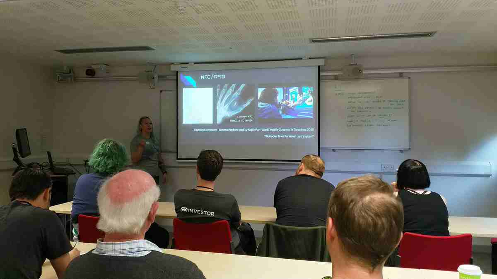
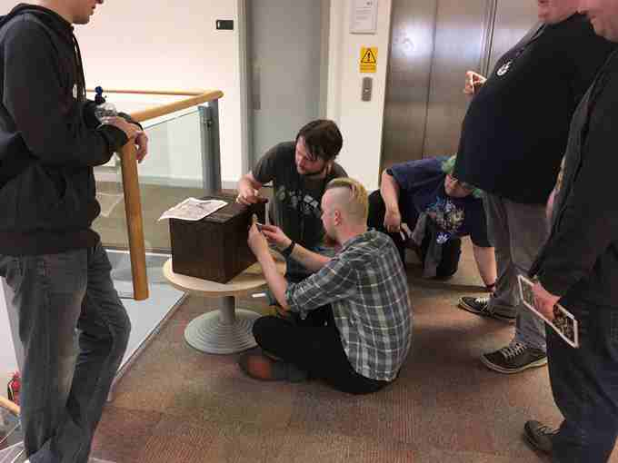
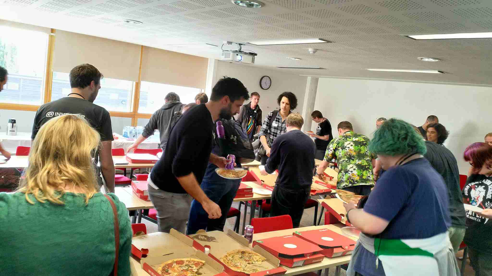
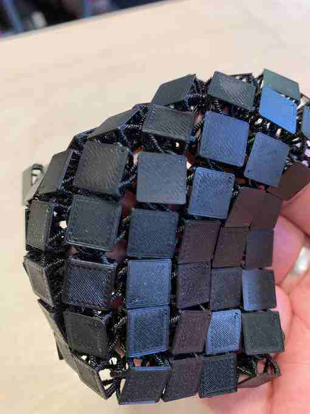
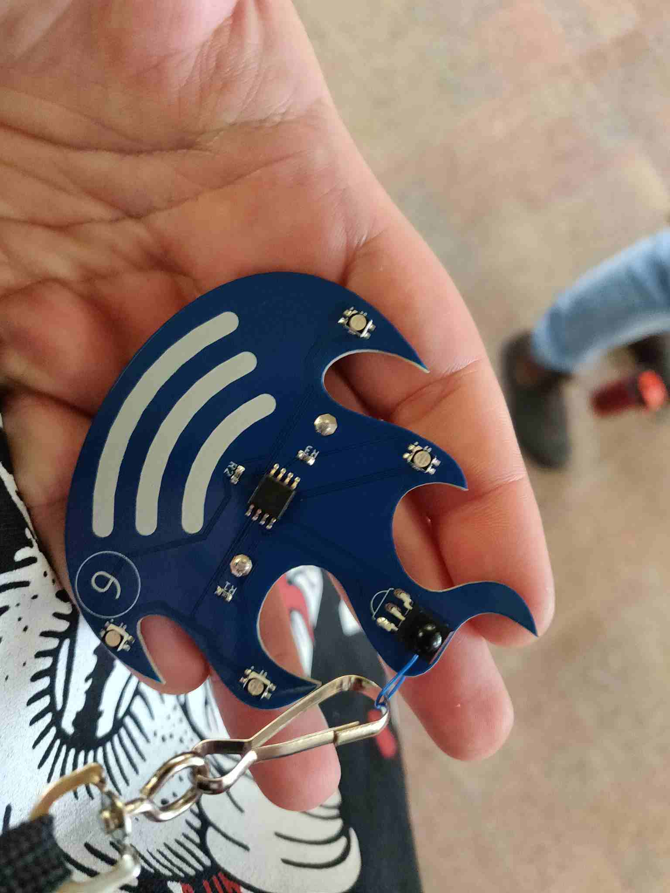
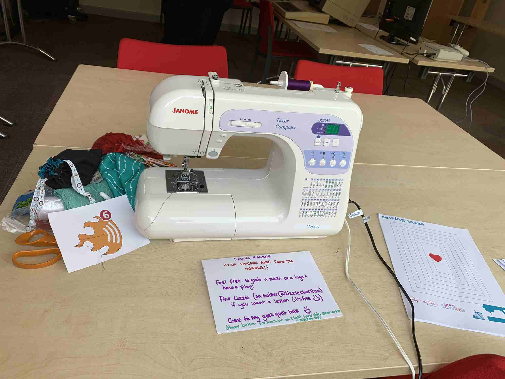
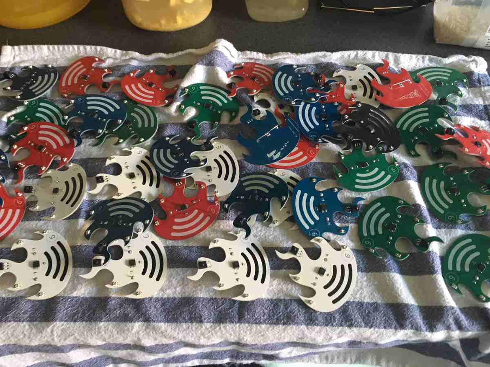
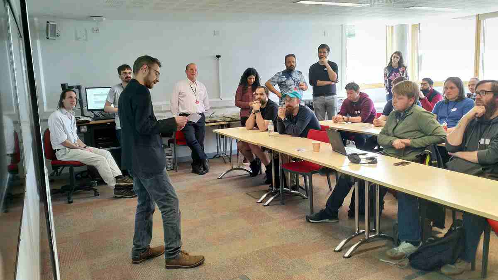

A free-to-attend community tech unconference
Saturday November 2nd 2024
Hosted this year by University of Kent: Templeman Library
Come along and get involved in the buzz of your local community of builders, makers and tinkerers.
BarCamp Canterbury is an annual free-to-attend community unconference.
The contents of a BarCamp is provided by the community of attendees.
Saturday November 2nd 2024
BarCamp Canterbury is an unconference that is completely free-to-attend and based loosely around the theme of technology.
As an unconference, the content of BarCamp Canterbury is provided by you, the attendees! Meet with like-minded people, share your ideas and engage in discussions.
On-the-day you can choose to give a talk about a cool project/idea.
BarCamp Canterbury has run since 2008.
Events host between 50 and 160 attendees.
The University of Kent School of Computing has historicity hosted the event for over 10 years and provided immense support in fostering our community.
Canterbury Christ Church University's - School of Engineering, Technology and Design: Proudly hosted BarCamp Canterbury in their Verena Holmes Maker Space in 2022.
Share your passion for anything that you've built, tinkered or engaged with.
You don't need much of a plan (no need for a PowerPoint); You can just passionately talk about your stuff on the day!
On the day, we will share a link to an editable online timetable grid of 30min slots. Add a title for your talk.
Talks tend to be tech-related but they can be about just about anything.
Attendees don't have to give a talk, although we do encourage everyone to get involved in the buzz of conversations
Each year we have a loose fun theme.
(We will announce this soon)
Last year's theme is "Awesome Space Missions/Technology"
🛰️☄️🌍🪐👩🚀🔭👽🚀
Thanks to our amazing sponsor Mythic Beasts: Pizza will be provided free (with vegan and gluten free options).
Mythic Beasts are helping us with hosting the event and can help you host your projects online!
(As this is a free event we may not be able to provide food for all dietary requirements)
Do you have any unloved/unwanted gadgets, cables, tools, boards, tech, bits, stuff?
Donate any working bits that someone else could use in an upcoming projects.
One persons junk is another persons treasure!
We had talks about home automation, car mechanics, automating stage lighting, building digital badges, science of creating vegan cheese, bio-hacking, home automation, led game-of-life clocks, karaoke systems, hacking electric bikes, stage lighting, experimental photography though water droplets, social-media for promoting skilled disabled musicians, and more ...
In 2019 our theme was loosely based on 'The Fifth Element' with digital interactive badges and intriguing team based puzzles
       If you would like to show support for our local community event, please read our supporter details and email us.
BarCamp Canterbury will always be free, however a suggested PayPal donation of £5 will help us provide refreshments and goodies at the event.
(Attendees under 18 years old are welcome, but must be accompanied by a responsible parent/guardian)
Donators/Supporters can have their name enshrined on our list of supporters below.
If you have booked a ticket, but cannot come, please return your ticket to the pool so that someone else can come instead. To do this "refund" the ticket on EventBrite.
Our team is a small group of local volunteers that are passionate about our local/hacker/builder/maker community.
We are always looking for extra hands to get involved. Contact us!
We would like to thank our supporters over the years who have contributed time, money or wares to make BarCamp Possible.
(Add yourself to the supporters list via Pull Request)